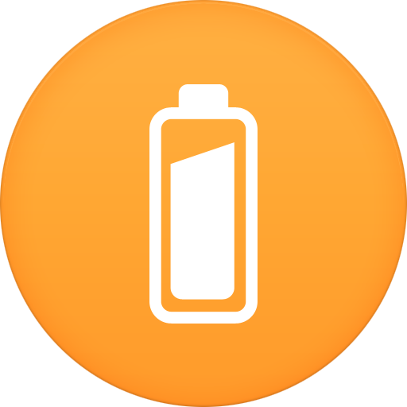

Please click the button corrosponding to the current task!
Connecting to rosbridge...
Connected
Error in the backend!
Connection closed.
Nothing sent yet!
Successfully sent the task to Gabe!
Failed to send task to Gabe :C
----
